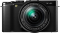

器材库 > APS及其以下画幅可换镜头数码相机 > X-A1 套机

规格总览
产品类型
APS画幅可换镜头数码相机
发布日期
2013-09-17
影像规格
影像传感器
CMOS
影像传感器尺寸
23.6 x 15.6 mm
总像素
1560万
有效像素
1630万
影像处理器
EXR Processor II
最大解像度
4896 x 3264
静态图像尺寸
L : (3:2) 4896 x 3264 / (16:9) 4896 x 2760 / (1:1) 3264 x 3264；M : (3:2) 3456 x 2304 / (16:9) 3456x 1944 / (1:1) 2304 x 2304；S : (3:2) 2496 x 1664 / (16:9) 2496 x 1408 / (1:1) 1664 x 1664
静态图像格式
JPEG, RAW, RAW+JPEG
画幅比
3:2, 16:9, 1:1
短片尺寸
1920 x 1080 分辨率, 1280 x 720 分辨率 (30 帧/秒)
短片格式
MOV, MPEG4-AVC/H.264
短片音效
线性PCM立体声
除尘系统
超声波振动
镜头和对焦
镜头卡口
Fujifilm XF
对焦系统类型
TTL相位检测
对焦点
区域自动对焦（49个区域= 7 x 7）、可改变自动对焦框尺寸
对焦模式
手动对焦 / 区域自动对焦 / 多重自动对焦 / 连续自动对焦 / 跟踪自动对焦
所选自动对焦点显示
区域/多重
AF辅助灯
有
手动对焦
支持
曝光控制
测光系统
256 区 TTL 测光、多重测光/平均测光
测光模式
中央重点测光, 多分区评价测光
曝光模式
P（程序自动曝光）, A（光圈优先自动曝光）, S（快门速度优先自动曝光）, M（手动测光曝光）
快门类型
焦平面快门
快门速度
（P 模式）1/4 秒至 1/4000秒，（所有其它模式）30 秒至 1/4000秒
曝光补偿
±2EV以1/3EV级调整
ISO感光度
200, 400, 800, 1600, 3200, 6400, 自动, 可扩展至12800, 可扩展至100, 可扩展至25600
白平衡
日光, 白炽灯, 荧光灯H, 阴影, 自动, 手动白平衡, 水下, 荧光灯L
自拍
10秒, 2秒
连拍
约每秒5.6帧（JPEG：最多30幅，RAW / RAW+JPEG：最多10幅）；约每秒3.0帧（JPEG：最多50幅，RAW / RAW+JPEG：最多10幅）
闪光灯
内置闪光灯
弹出式
闪光模式
自动, TTL, 慢速同步, 减轻/消除红眼, 强制闪光, 禁止闪光, 减轻红眼慢速同步
闪光指数
约7（ISO200·m）
取景器/显示屏
LCD类型
TFT LCD
LCD尺寸
3.0英寸
LCD像素
92万
视野率
100%
LCD特性
翻转屏
文件输入/输出
存储卡
SD/SDHC, SDXC
数据接口
USB2.0
视频/音频接口
HDMI 输出, HDMI Mini 输出
电源
电池
一块NP-W126锂离子充电电池
续航能力
约350幅（配有XF35mmF1.4 R镜头）
机身规格
材质
镁合金
颜色
黑色, 红色, 蓝色
尺寸
116.9 x 66.5 x 39.0mm
重量
280g
其它
备注
内置Wi-Fi
wu98982014-08-28 10:064.63 分
操作性 4.50功能性 4.50美观性 5.00趣味性 4.50耐用性 4.00性价比 5.00解像力 4.50色彩还原 5.00
zyu826102014-07-31 15:304.5 分
操作性 4.00功能性 4.50美观性 4.50趣味性 4.50耐用性 4.50性价比 5.00解像力 4.50色彩还原 4.50
WXXZZ2014-07-31 15:264.44 分
操作性 4.50功能性 4.50美观性 4.50趣味性 4.50耐用性 4.00性价比 4.50解像力 4.50色彩还原 4.50
小月亮2014-07-31 15:234.44 分
操作性 4.50功能性 4.50美观性 4.50趣味性 4.50耐用性 4.50性价比 4.50解像力 4.00色彩还原 4.50
产品图 / 样片
1
评测 / 相关文章
该产品暂无存档的评测文章